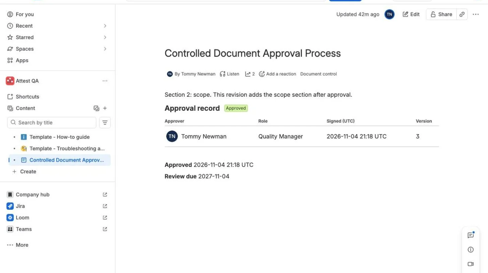
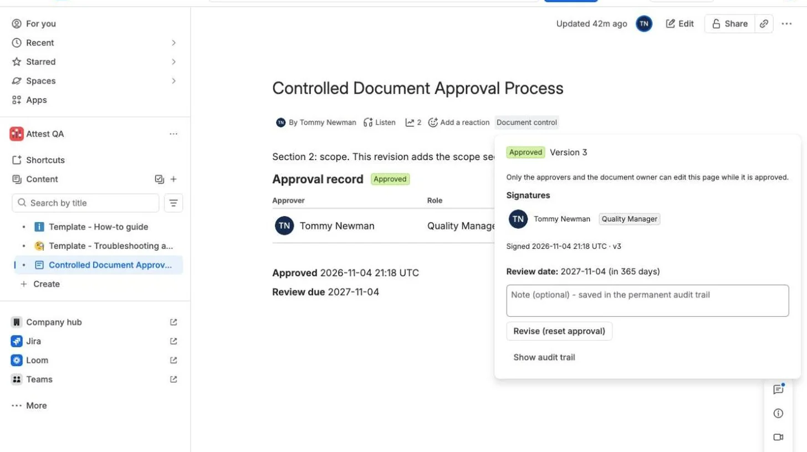
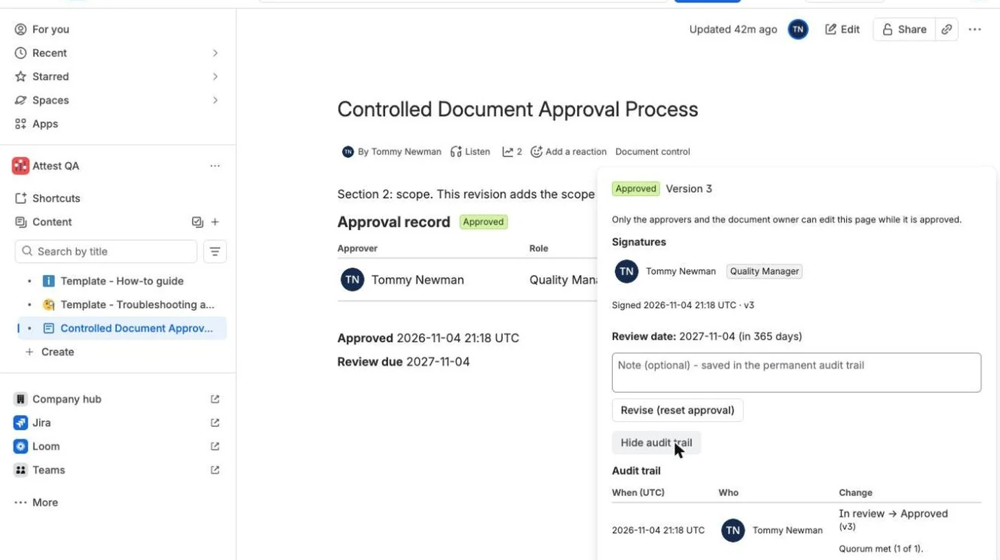

Confluence approvals that reset when the page changes.
On an ordinary Confluence page, an approved document can be edited and still look approved. With Attest, an approved page locks. If someone with access publishes a new version, the approval resets to Draft, the signatures clear, a page comment notifies the owner, and the audit trail records it.
Not on the Marketplace yet. Early access is by email, directly with the person who built it.
Quality Manual

Try it. This is an illustration of the app's behaviour; the real screens are below.
What a status label doesn't do.
A status label doesn't change on its own when a new version is published.
- Someone edits the page after sign-off, and it can keep looking approved
- Who approved which version lives in someone's memory or inbox
- Review dates pass without anyone noticing
- Anyone who can edit the page can change the label
- Publishing a new version resets the approval automatically
- Approver, role, UTC time and version are rendered in the page itself
- A daily check expires overdue documents and posts on the page
- Only listed approvers can approve, and only space admins can list them
Screens from the app.
Real screens from Attest running in Confluence Cloud on a test site.



The signature record sits in the page body: approver, role, UTC time and version.
See it in thirty seconds.
How it works.
- Set it up. Space settings, Integrations, Document control. Add approvers with their roles, choose how many must sign, set a review period.
- Submit and approve. Open Document control under any page title and submit it for review. An approver signs.
- Place the signature. Insert the Approval signatures macro where the record belongs in the document.
- After approval. Publishing a new version resets the approval and posts a page comment for the owner. A daily check expires documents past their review date.
Who can do what.
The panel and the server use the same rules, so a crafted request gets the same answer as the button.
| Action | Allowed for |
|---|---|
| Submit for review | Anyone who can view the page |
| Approve | Listed approvers who haven't already signed and didn't submit this version. A space can allow self-approval. |
| Send back to draft | Listed approvers |
| Reset an approval | Listed approvers and the page owner |
| Expire a document | Only the daily check |
| Change settings or export the space's trail | Space administrators |
Questions a careful buyer asks.
Does our data leave Atlassian?
Attest has no servers of its own and makes no outside network calls. What it stores is held in Forge storage on Atlassian's infrastructure. The privacy policy lists every field.
Who loses edit access when a page locks?
While a page is approved, only its approvers, its owner, anyone already named in its restrictions and the app can edit it. Everyone else in the space loses edit access until the approval is reset, when the previous restrictions are restored. Locking can be turned off per space.
What if a lock can't be applied?
The approval stands, but the page stays editable. The panel shows an error, and the audit trail records it.
Who can change the approvers?
Only space administrators, checked against the caller's permissions on that space. Every settings change is recorded in the space's audit trail.
Does it read our page content?
It never requests the page body. It works with page versions and restrictions. Writing restrictions requires Confluence's classic content scopes, which are broad enough to read and change content. The app uses them only for restrictions.
Will this make us 21 CFR Part 11 compliant or ISO 13485 certified?
No. No software can deliver either. A signature in Attest means a listed approver clicked Approve at a recorded role, UTC time and page version. There's no re-authentication step. Validating your process remains your responsibility.
What permissions does it ask for?
storage:app, read:page:confluence, read:space:confluence, read:content.restriction:confluence, write:content.restriction:confluence, read:confluence-content.all, write:confluence-content, read:confluence-content.summary, write:comment:confluence and read:confluence-user.
What doesn't it do?
It doesn't snapshot page content: the record shows when and by whom a version was approved, and Confluence's page history holds what it said. Notices are page comments. Approvers aren't notified when something is submitted. Audit entries aren't cryptographically sealed. The daily check handles 100 documents per run, and audit export returns up to 5,000 rows. It hasn't yet been through a real audit.
What does it cost?
Pricing will be published with the Marketplace listing. Email if you'd like to talk before then.
Talk to the person who built it.
Attest is new, and one person, Tommy Newman, builds and supports it. It has no customers yet. If you run controlled documents in Confluence, tell me what your auditor asks for, and it will shape what gets built next.